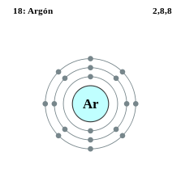

|
|
||
|
ARGÓN Se sospechaba de la presencia del argón ya desde 1785 y se descubrió de forma oficial en 1894. Tanto en su forma gaseosa como líquida, argón es incoloro e inodoro. El argón es un gas inerte y no forma verdaderos compuestos químicos. En su forma natural, el argón se compone de una mezcla de tres isótopos. También existen doce isótopos radioactivos. El argón se usa para bombillas de lámparas incandescentes y fluorescentes, y para los fototubos y tubos incandescentes. El argón se usa como un gas de protección para la soldadura y corte con arco, actúa como una manta en la producción de titanio y otros elementos reactivos, y ofrece una atmósfera protectora para el crecimiento de cristales de silicio y germanio. |
 |
DATOS Número Atómico: 18 Peso Atómico: 39.95 Electronegatividad: 3.00 Configuración Electrónica: [Ne] 3s² 3p⁶ Estados de Oxidación: 0 No. de Electrones de Valencia: 8 |